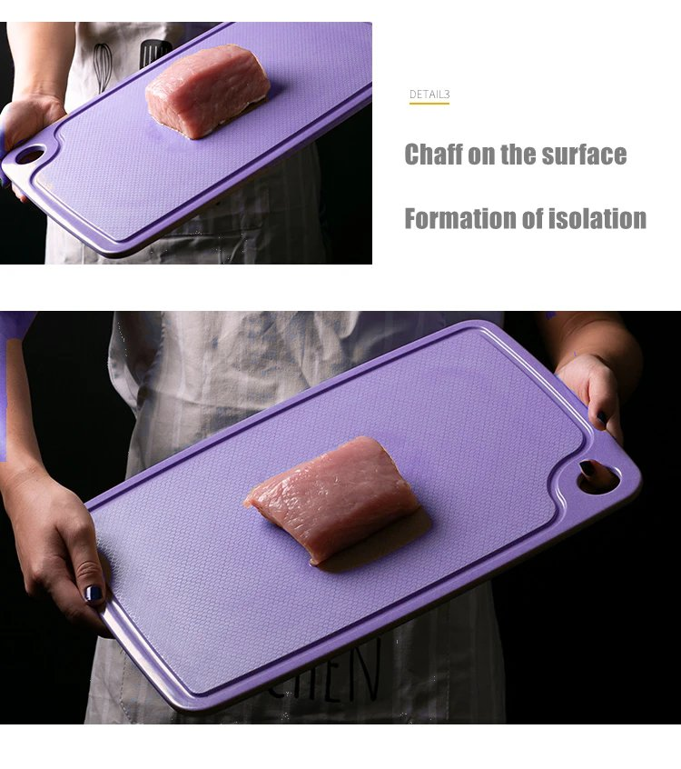
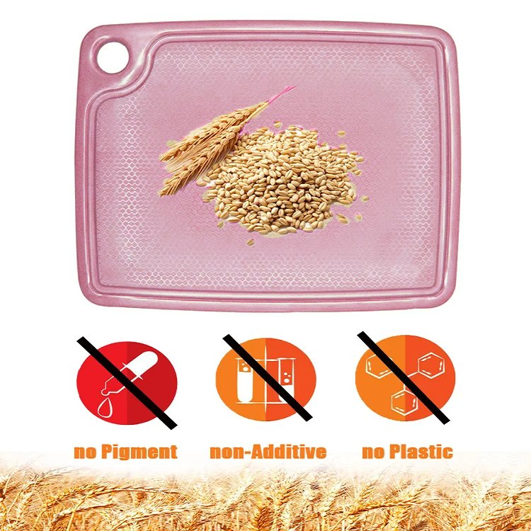
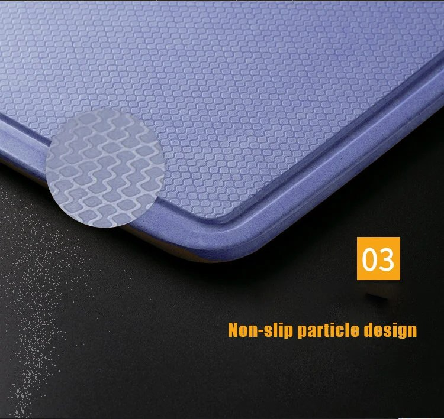
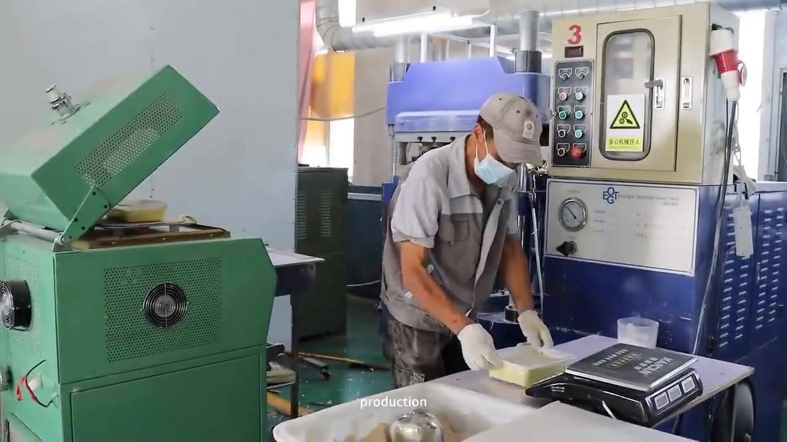

One category, done properly. Natural, coloured and anti-slip rice husk chopping boards with custom Pantone colours, your logo and retail-ready packaging. Made in our own plant and supplied to importers, Amazon sellers and kitchenware distributors across the UK, Australia and New Zealand.
Every board is made from rice husk fibre and a food-grade starch binder. Choose the surface and grip that fits your range — then make it yours with colour and packaging.
.jpg)
Two sizes, natural husk colour, dense knife-friendly surface. The everyday board for retail and foodservice.
View details →
Any Pantone colour, three sizes, juice groove and hanging hole. Built for colour-coded kitchens and own-label ranges.
View details →
A continuous silicone ring on the underside grips the worktop for stable, controlled cutting.
View details →
Four curved silicone bars at the back corners — a stable anti-slip base that stays put on the worktop.
View details →Rice husk is the protective outer layer of the rice grain — an agricultural by-product that was commonly burned or discarded after harvest. We clean and mill it, blend it with a food-grade starch binder, and mould it under heat and pressure into a dense, reusable board.


We are an OEM manufacturer first. Match a Pantone shade, press or print your logo, and pack the board in a kraft box with your artwork and barcode. Colour-coded sets for HACCP-style kitchens are a natural fit — and we can develop custom sizes, thicknesses and shapes for a distinctive range.
Short, practical guides for buyers comparing materials and wording before they place a first order.

How the four materials compare on hygiene, knife wear, care and end of life — and where rice husk wins.
Read the guide →.jpg)
Why the words matter for UK, Australian and New Zealand listings, and how to title your product for each market.
Read the guide →
5,000 m², 50+ staff and 20+ presses. See how a board is made and what we can prove to your buyer.
Visit the plant →Tell us the sizes, colours and packaging you have in mind. We will send the spec sheet, MOQ and sample photos — no obligation.